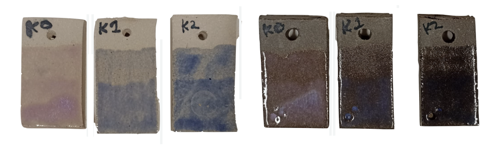

Mudd, K., & Youngblood, M. & Schedel, M. (2026). Dynamics of creative exploration: A study of signal space constraints in music and communication. In Boleda, G., Dautriche, I., Maldonado, M., Saldana, C & Torrent, T. (Eds.), Proceedings of the 48th Annual Meeting of the Cognitive Science Society (CogSci 2026). [Preprint]
Mudd, K., & Schouwstra, M. (2024). Shared context and lexical alignment: an experimental investigation. In L. K. Samuelson, S. L. Frank, Toneva, M., A. Mackey, & E. Hazeltine (Eds.), Proceedings of the 46th Annual Meeting of the Cognitive Science Society (CogSci 2024).
Lutzenberger, H., Mudd, K., Stamp, R., & Schembri, A. (2023). The social structure of signing communities and lexical variation: A cross-linguistic comparison of three unrelated sign languages. Glossa: A journal of general linguistics, 8(1), 1-40. https://doi.org/10.16995/glossa.10229
Mudd, K., de Vos, C. & de Boer, B. (2021). Shared context facilitates lexical variation in sign language emergence. Languages. 7(1), 31. https://doi.org/10.3390/languages7010031
Mudd, K., de Vos, C. & de Boer, B. (2020). The effect of cultural transmission on shared sign language persistence. Palgrave Communications. 6. https://doi.org/10.1057/s41599-020-0479-3

katherine [dot] mudd [at] stonybrook [dot] edu